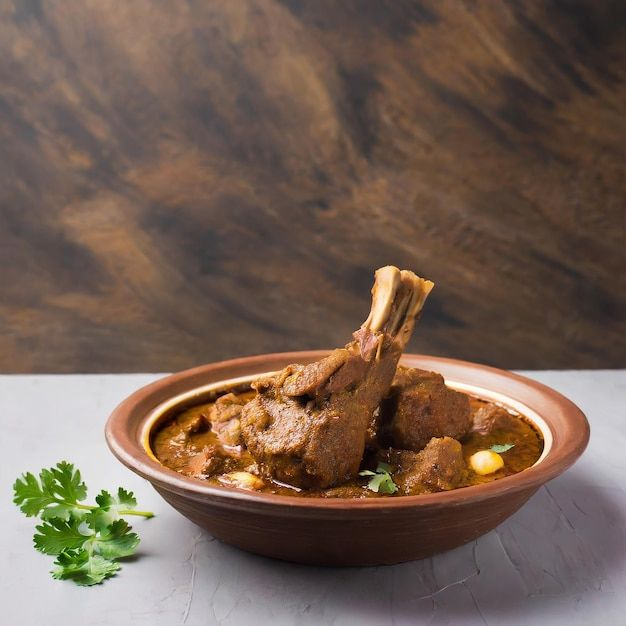
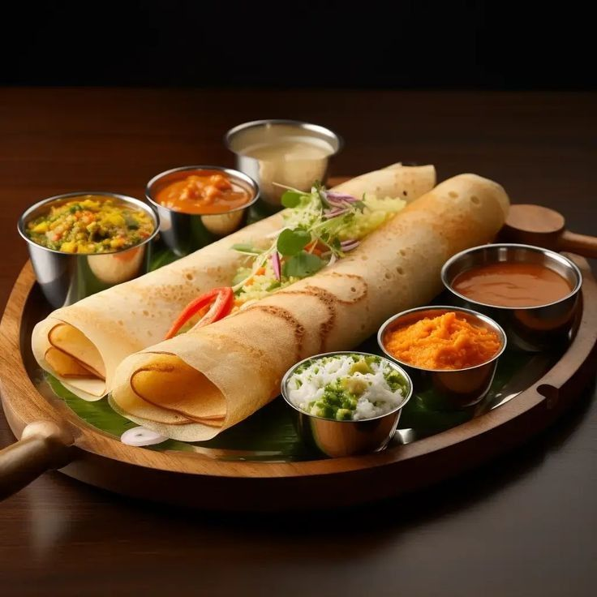

Hyderabad Biryani is a flavorful rice dish made with spices and tender meat. Its rich aroma and spicy taste make it one of India’s most loved foods.

Italian Pizza is famous for its crispy crust and cheesy toppings. It is a delicious comfort food enjoyed by people around the world.

Rogan Josh is a traditional Kashmiri dish prepared with aromatic spices and lamb. It is well known for its rich flavor and vibrant appearance.

Dosa is a crispy South Indian breakfast dish served with chutney and sambar. Its crunchy texture and delicious taste make it very popular.